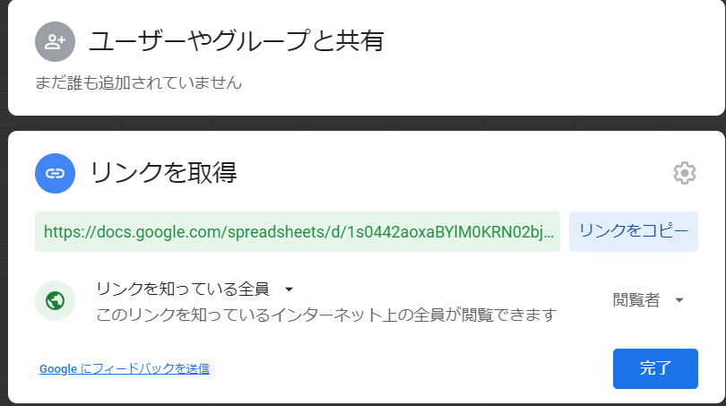

日程調整でGoogleスプレッドシートを使うときに便利なアノ関数について
これは 箪笥 Advent Calendar 2020 の14日目の記事です。
※箪笥とは卓ゲ箪笥というボードゲーム・TRPG好きが集まるMastodonインスタンスです。
はじめに
みなさん、日程調整はしておりますか？
私は趣味でボドゲやTRPGやマーダーミステリー、最近はAmong usをよく遊ぶのですが、その中で一番たいへんなのが……
・
・
・
＿人人人人人人人人人人人人人＿
＞ 日程調整がとても大変！ ＜
￣Y^Y^Y^Y^Y^Y^Y^Y^Y^Y^Y^Y￣
・
・
・
日程調整を毎回やっていただいてる幹事さん、GMさんの皆様には感謝の念しかありません。
今回、その日程調整を行ううえで便利な方法について、説明したいと思います。
日程調整における一つの問題点
卓修羅、ゲーム修羅の方々はよく並行して日程調整を行うことがあるかと思います。
日程調整の数が増えれば増えるほど懸念しなければいけないのが日程の更新漏れでしょう。
たとえば4つの日程調整を抱えてるとして、1つの日程が確定した場合、残り3つの日程調整表は「予定あり」にしなければなりません。 そうしないと予定があいてると思われて、予定がダブルブッキングする可能性が増えますよね。
├── a(伝◯) ← ①予定確定！1/30に遊ぶ！
├── b(伝◯) ← ②1/30は予定あり更新しなきゃ……
├── c(調◯さん) ← ②1/30は予定あり更新しなきゃ……
└── d(調◯さん) ← ②1/30は予定あり更新しなきゃ……
今回はGoogle スプレッドシートでの日程調整を行うことで、以下のように複数の予定を自動的に変更してくれるような方法を説明します。
── 親元 ← ②1/30を予定ありに変更
├── a ← ①予定確定！1/30に遊ぶ！
├── b ← ③親元が変更されたので1/30が自動的に予定ありになる
├── c ← ③親元が変更されたので1/30が自動的に予定ありになる
└── d ← ③親元が変更されたので1/30が自動的に予定ありになる
Google スプレッドシートによる日程調整
自分が日程調整を行うときによく使うのが、今回の主題となる「Google スプレッドシート」です。
以下のようなテンプレートをコピーして、日程調整に使っております。
こちらのテンプレートについてはご自由にコピーしてお持ち帰りください。
画像をみていただければ分かる通り、日程調整シートのセルB4には以下の関数が記載されております。
=IMPORTRANGE(“1s0442aoxaBYlM0KRN02bjkjY9cuTk0kjh6_XLbWYY24”,“2021/1月!B4:B35”)
上の数式を使うことにより、複数の調整シートがあったとしても親となるスプレッドシートを一つ更新するだけで子の日程調整表がすべて同時に更新される仕組みになっています。
ちなみに、親元となる個人日程表は以下のリンク先にあります。 こちらのテンプレートについてもご自由にコピーしてお持ち帰りください。
!注意
コピーした場合アクセス権限が初期化されます。今回IMPORTRANGE関数を使うため、個人日程調整テンプレについてはコピー後に以下の操作を行ってください。
- 画面右上の「共有」ボタンをクリック
- 「リンクを取得」の下側、「制限付き」を「リンクを知っている全員」に変更
- 「完了」ボタンをクリック

IMPORTRANGE関数
Google スプレッドシートで日程調整するときに便利なアレ、それがIMPORTRANGE関数です。 構文は以下のとおりです。
IMPORTRANGE(スプレッドシートキー, [シート名!]範囲の文字列)
IMPORTRANGE関数第一引数：「スプレッドシートキー」について
Google スプレッドシートのURLの太字の部分がスプレッドシートキーです。
https://docs.google.com/spreadsheets/d/1s0442aoxaBYlM0KRN02bjkjY9cuTk0kjh6_XLbWYY24/edit#gid=1227163214
こちらのスプレッドシートキーについてはシートをコピーして複製するたび変更されるため、今回のテンプレをお持ち帰りいただいた際は適宜変更をお願いします。
IMPORTRANGE関数第二引数：「[シート名!]範囲の文字列」について
こちらは基本的には日程調整表に表示させたい部分を入れます。 以下の画像のとおり、シート：「2021/1月」のB列4行目～35行目を表示させる場合は、2021/1月!B4:B35と入力します
そうして出来上がったのは以下のIMPORTRANGE関数です。
=IMPORTRANGE(“1s0442aoxaBYlM0KRN02bjkjY9cuTk0kjh6_XLbWYY24”,“2021/1月!B4:B35”)
親元となる個人日程調整テンプレを修正するだけで子の日程調整表がすべて同期されるので、個人的にはおすすめのやり方です。
ぜひ、この記事を読んでいただいた方は試してみてください！